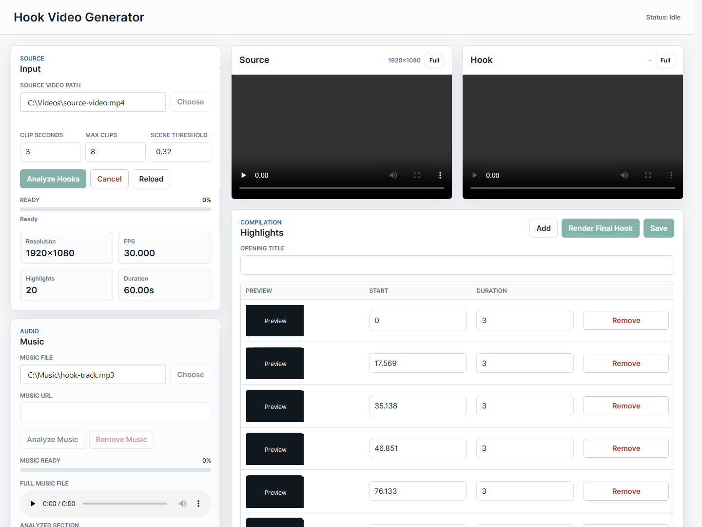
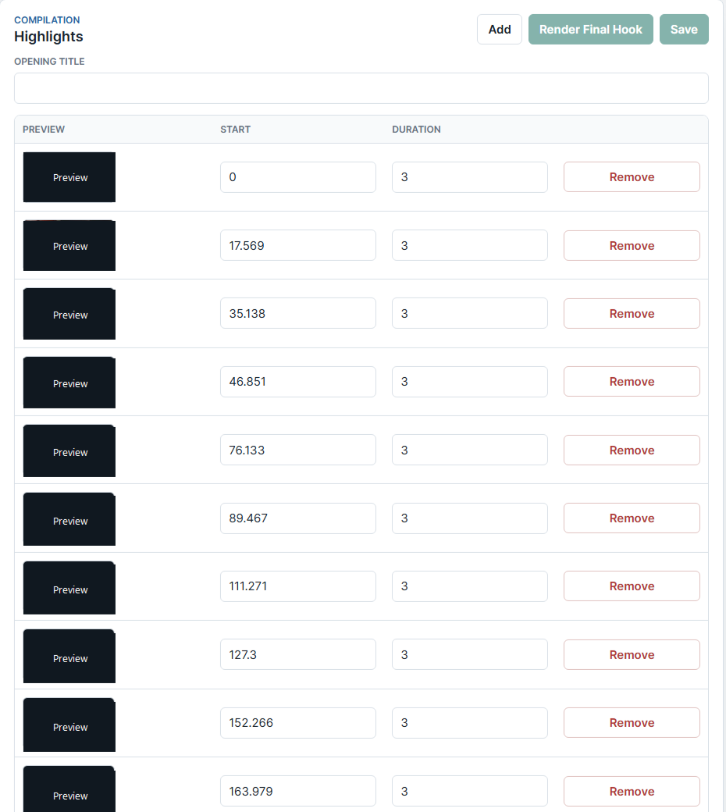
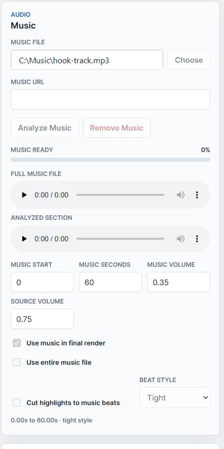
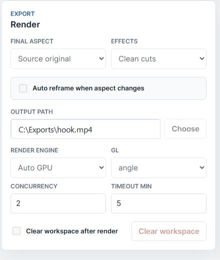

User guide
Hook Video Generator
A local tool for turning one source video into a short hook compilation while preserving source quality, optionally matching cuts to music beats, and exporting a final hook video.
What This App Does
Hook Video Generator analyzes a source video, chooses high-energy highlight candidates, lets you edit those moments, and renders a short compilation. It can keep the original source aspect ratio or create a new output shape with auto reframe.
The app can also analyze a local music file, find a strong section, detect beats, auto-select a beat style, and cut highlights to that rhythm.

Recommended Workflow
Input And Analysis Controls
The Input section is where you select the source video and control how highlight candidates are found.
| Control | What it does | When to change it |
|---|---|---|
| Source video path | Shows the source video used for analysis and rendering. | Change this whenever you want to work on a different video. |
| Choose | Opens the native file picker and uses the original file path. | Use this instead of typing paths by hand. |
| Clip seconds | Sets the default length of each selected hook segment. | Use 2-4 seconds for fast hooks, 5-8 seconds for slower pacing. |
| Max clips | Limits how many highlight candidates are created. | Increase it when you want more choices before rendering. |
| Scene threshold | Controls how sensitive scene-change detection is. | Lower values find more cuts; higher values find fewer cuts. |
| Analyze Hooks | Runs video analysis and builds the highlight list. | Click after choosing a source video or changing analysis settings. |
| Cancel | Stops the active analyze, music analyze, or render job. | Use it when a long video is taking too long. |
| Metrics | Shows resolution, FPS, number of highlights, and hook duration. | Use this to confirm the project is using the expected source settings. |
Preview Area
The Source preview shows the selected original video. The Hook preview shows the rendered output after a final render exists. Both previews have a Full button for fullscreen viewing.
Highlight Editor
The highlight table is the editable compilation timeline. Each row is a clip pulled from the original source video.

| Control | What it does |
|---|---|
| Preview | Shows a small frame from the clip so you can judge the moment quickly. |
| Start | Seconds into the source video where this highlight begins. |
| Duration | How many seconds this highlight lasts in the final hook. |
| Add | Adds a manual highlight row. |
| Remove | Deletes that highlight from the compilation list. |
| Save | Saves your edited project settings and highlight list. |
| Render Final Hook | Starts final rendering using the current highlight list and export settings. |
Music Controls
Music is optional. If you add it, the app can analyze the music file, choose a strong section, detect beats, and help cut highlights on rhythm.

| Control | What it does |
|---|---|
| Music file | Selects a local audio file such as MP3, WAV, M4A, or AAC. |
| Music URL | Accepts a direct audio/video file URL. YouTube watch links are not direct files. |
| Analyze Music | Measures the music, finds a strong section, detects beats, and suggests beat style. |
| Full music file player | Lets you listen to the entire selected music file. |
| Analyzed section player | Lets you listen only to the chosen music segment. |
| Music start | Start time of the music segment used in the final render. |
| Music seconds | Length of the music segment used in the final render. |
| Music volume | Volume of the background music in the final hook. |
| Source volume | Volume of the original source-video audio in the final hook. |
| Use music in final render | Turns background music on or off for the render. |
| Use entire music file | Uses the whole selected music file instead of an analyzed segment. |
| Cut highlights to music beats | Changes clip durations so highlight cuts land on detected beats. |
| Beat style | Controls how aggressively highlights follow the beat. The app auto-selects this after music analysis, but you can still adjust it. |
Beat Style Meaning
| Style | Best for | Behavior |
|---|---|---|
| Loose | Slower music or dialogue-heavy edits. | Longer cuts with fewer beat jumps. |
| Tight | General short-form hooks. | Balanced cut timing that follows the rhythm without becoming too frantic. |
| Fast | Dense beats, energetic edits, rapid hooks. | Shorter cuts and faster pacing. |
Render And Export Settings
The Render section controls the final video shape, effects, output path, render engine, and cleanup behavior.

| Control | What it does |
|---|---|
| Final aspect | Chooses the output format. Source original keeps the source resolution and aspect ratio. Other options create vertical, square, portrait, or landscape exports. |
| Effects | Selects visual cut effects. Auto reactive changes intensity and pacing based on detected music beat strength and local tempo. |
| Color boost | Adds an HDR-style grade to normal SDR video. Natural is subtle; vivid is stronger. This is a visual boost, not true HDR metadata. |
| Auto reframe when aspect changes | When final aspect differs from the source, the app can reframe the source automatically so the important region stays visible. |
| Output path | Where the final hook.mp4 will be saved. |
| Render engine | Auto GPU lets the app use GPU acceleration when possible. Force GPU requests GPU rendering. CPU only avoids GPU rendering. |
| GL |
Chooses the graphics backend for Remotion rendering. Use
angle first; try vulkan,
egl, or swiftshader if rendering fails.
|
| Concurrency | How many render workers Remotion can use at once. |
| Timeout min | Maximum wait time for slow frame rendering before failing. |
| Clear workspace after render | Clears app-created workspace files after rendering. The final output video is kept. |
| Clear workspace | Clears current source/project/highlight workspace data that the app tracks in its manifest. |
Effects
| Effect | What it does |
|---|---|
| Clean cuts | Simple clip stitching with fades and the progress bar. |
| Auto reactive | Uses analyzed beat strength and local music pace to keep slow parts smoother and faster parts more energetic. |
| Smooth slow | Uses gentle fades and slow push-in motion for slower songs. |
| Fast kinetic | Uses quick, restrained punch motion for dense fast beats. |
| Slow-fast mix | Follows songs that build from slow to fast by switching the cut feel as the local tempo changes. |
| Beat punch | Adds a quick punch/flash at cut points. |
| Flash cuts | Adds a brighter flash on clip changes. |
| Impact shake | Adds stronger movement on impact cuts when auto reframe is active. |
Troubleshooting
| Issue | What to try |
|---|---|
| Music analysis button is disabled | Choose a music file and analyze hooks first so the app knows the hook duration. |
| YouTube link does not analyze | Use a local music file or a direct audio/video file URL. |
| Render fails with graphics errors | Try CPU only or switch GL to swiftshader. |
| Render is slow | Use Auto GPU or Force GPU, lower concurrency if the machine is overloaded, or increase timeout. |
| Highlights feel too fast or too slow | Change Clip seconds, edit row durations, or adjust Beat style. |
| Final hook does not update | Click Save after editing highlights, then Render Final Hook again. |